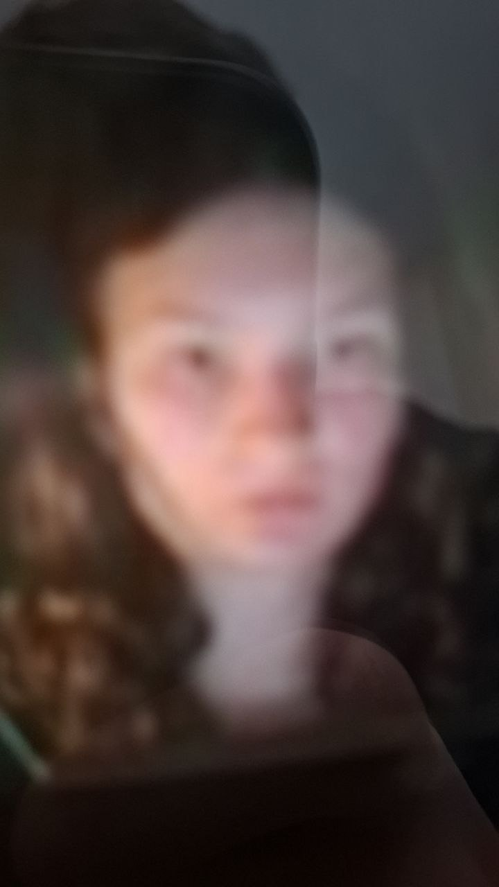

| Arina Kokina |
|---|
|  |
| Chocolate lover |
| 15th Febraury, 2008 |
| Telegram username: @arinaaaaaa15 |
|
Known relatives: Milana Kokina |
| Hobbies: writing |
Some skibidi amogus text about the subject with some skibidi links.
Skibidi toilets are a quirky and imaginative concept often seen in internet culture and memes. They typically combine ordinary toilets with playful, surreal, or humorous elements, sometimes inspired by the catchy "Skibidi" song by the Russian band Little Big. These toilets often appear in funny videos or animations, adding a whimsical twist to everyday objects and sparking creativity and laughter among viewers.
Tung Tung Tung Sahur is a viral meme inspired by an Indonesian Ramadan tradition where people drum early in the morning to wake others for Sahur, the pre-dawn meal before fasting. In 2025, this cultural call was turned into a spooky meme featuring a wooden figure that appears if the call is ignored, creating a playful yet eerie internet sensation. The phrase mimics the drumbeat sound and highlights this unique cultural practice in a surreal way.
Borisiro Shpioniro is a whimsical character phrase often linked to the Italian Brainrot meme culture. The phrase gives off a playful, mysterious vibe typical of chaotic and humorous AI-generated characters that rhyme or create absurd scenarios online. Borisiro Shpioniro represents a spy-themed element in meme storytelling, adding to the surreal and entertaining universe popular on TikTok and other platforms.
Yurymiro Bombordiro is another eccentric character name found within the Italian Brainrot meme genre. The phrase sounds like a comical, pseudo-Russian or Eastern European battleground nickname, often included in chaotic, rhyme-filled, and exaggerated meme narratives. Yurymiro Bombordiro embodies the over-the-top, absurd, and creative style of viral AI meme content that blends humor, pseudo-military themes, and surreal storytelling.